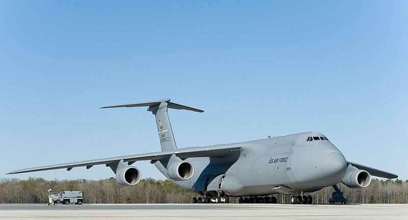

Dover AFB Delaware Delaware · Military base · 39.129°N, 75.467°W A C-5M Super Galaxy on the flight line at Dover, 2014. Photo: Roland Balik, U.S. Air Force, Public domain (source) Major airlift base. 1 Open in the interactive Watcher Sources Dover Air Force Base Wikipedia